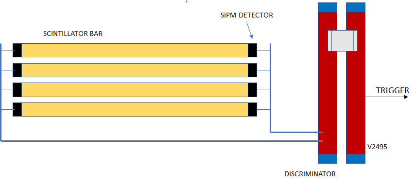
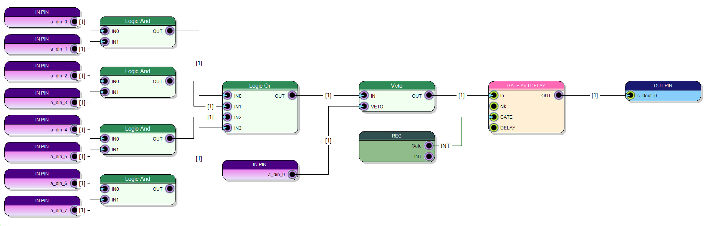

COINCIDENCE TRIGGER¶
http://www.sci-compiler.com/example-sci-1.html
A discrete trigger circuit is a fundamental part of a large detector system used to reduce the readout data rate. The following trigger is based on scintillator bars coupled with SiPM detectors. The high energy particles will cross the scintillator bars releasing a fraction of their energy.
If a particle cross one of the scintillator bar, the scintillation light will be detected by SiPM detectors (i.e. Ispector detector). A discriminator generate a digital pulse converting the analog signals from detectors in digital pulses.
A Caen V2495 is used to make coincidence and trigger logic. In particular pulses generated by each side of the scintillator are in AND (coincidence) in order do distinguish real signal from noise/dark count. All scintillator bars are in OR in order to fire a trigger independently from the bar hit.
The gate and delay is used to configure the width of the pulse in output. The gate time is mapped on a register that can be configured with a PC using VME/USB bus
A veto logic is used to stop trigger generation.
